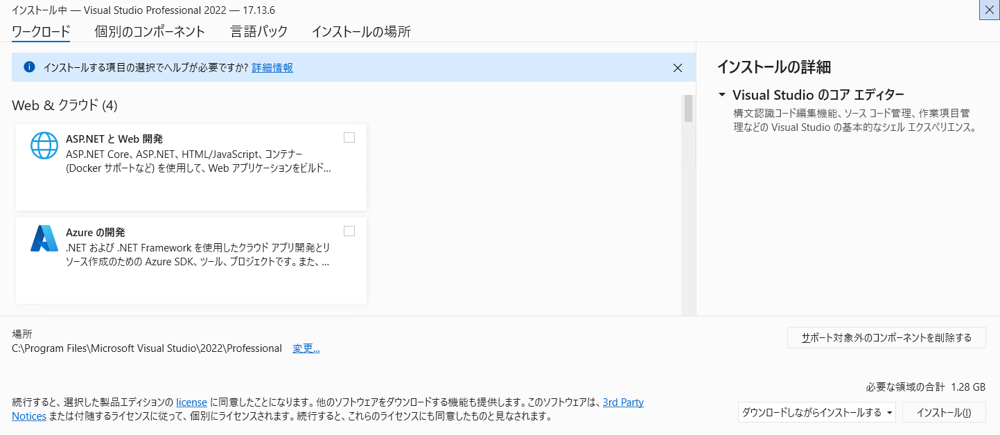
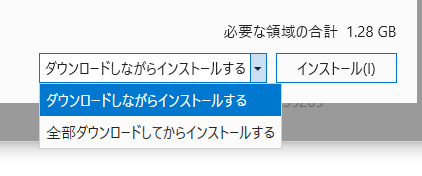
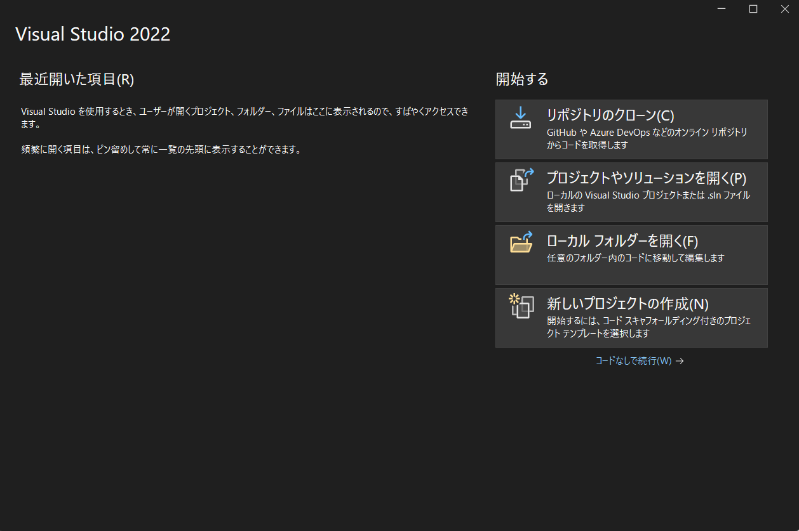

令和のこの世になって、Visual Basic .NET（以下、VB.NET）で開発された資産をメンテする必要が出てきたため、勉強がてら資料を作成しました。
最終的な目標は、VB.NETの基本的な仕組みを理解し、ご自身で簡単なプログラムを作成できるようになることです。難しく考える必要はありません。プログラミングとは、いわば「コンピューターに対する指示書を書く」作業です。私たちが普段使う言葉を、コンピューターが理解できる言葉（プログラミング言語）に翻訳していくようなもの、と考えてみてください。一つ一つのステップを丁寧に解説していきますので、焦らず、ご自身のペースで学習を進めていきましょう。
Visual Basic .NETは、Microsoft社が開発したプログラミング言語の一つです。特に、私たちが日常的に使っているWindows上で動作するアプリケーション（ソフトウェア）を作成するのに適しています。
VB.NETの大きな特徴は、他のプログラミング言語と比較して、人間にとって読み書きしやすい構文（文法）を持っていることです。まるで、箇条書きで指示を出すように、比較的直感的にプログラムを記述することができます。
また、VB.NETは「.NET」（ドットネット）という、Microsoftが提供する大きな開発基盤の上で動作します。この.NETは、プログラム開発を助けるための様々な機能（部品や道具箱のようなもの）を提供しており、VB.NETはその恩恵を受けて、効率的にプログラムを作成することができます。例えるなら、VB.NETは「.NET」という名の、非常に設備の整った大きなキッチンで使える、使いやすい調理器具の一つ、といったところでしょうか。
このマニュアルは、以下のような方を対象としています。
このマニュアルでは、プログラムを作成するための統合開発環境（IDE：Integrated Development Environment）として、「Visual Studio 2022」を使用します。Visual Studioは、プログラムの記述、間違い探し（デバッグ）、実行などを効率的に行うための、高機能なソフトウェアです。次の章で、このVisual Studioの準備について説明します。
プログラミングを始めるには、まずそのための道具、つまり「開発環境」を整える必要があります。料理をするのにキッチンや調理器具が必要なのと同じですね。VB.NETでの開発では、主に「Visual Studio」というソフトウェアを使用します。この章では、Visual Studioの準備と基本的な使い方について学びましょう。
Visual Studioは、Microsoft社が提供する「統合開発環境（IDE: Integrated Development Environment）」と呼ばれるソフトウェアです。
「統合開発環境」と聞くと難しく感じるかもしれませんが、要するにプログラム開発に必要な様々なツールが一つにまとまった、非常に高機能な作業台のようなものです。
このように、Visual Studioがあれば、プログラム作成の様々な工程をスムーズに進めることができます。
Visual Studio 2022は、Microsoftの公式サイトからダウンロードしてインストールできます。インストール時には、「ワークロード」と呼ばれる、開発したいものの種類に応じた機能セットを選択する必要があります。VB.NETでWindowsアプリケーション（Windows Formsなど）を作成する場合は、「.NET デスクトップ開発」というワークロードを選択してください。なお、必要なワークロードが不明である場合は、リーダーなどの上席者に確認してください。

前述のとおり、ここでは「.NET デスクトップ開発」を選択してください。なお、他にインストールすべきコンポーネントがある場合、個別にインストールするコンポーネントを選択可能です。 3. インストール方法は2通りありますが、ネットワークが不安定である場合は「全部ダウンロードしてからインストールする」を選択してから「インストール」ボタンを押します。

Visual Studioを使ってプログラム開発を始めるには、まず「プロジェクト」を作成します。プロジェクトとは、一つのアプリケーションを作るために必要なファイル一式をまとめたものです。
ここでは例として、Windowsの画面を持つ簡単なアプリケーション（Windows Forms アプリケーション）のプロジェクトを作成する手順の概要を示します。

MyFirstApp など、分かりやすい名前）と、プロジェクトを保存する場所を指定します。これで、空のWindowsフォーム（ウィンドウ）が表示され、プログラム開発を開始する準備が整いました。
インストールが完了したら、Visual Studioを起動してみましょう。スタートメニューなどから「Visual Studio 2022」を選択します。
起動すると、いくつかのウィンドウが表示されます。最初は少し戸惑うかもしれませんが、よく使う主要なウィンドウの役割を覚えておきましょう。
これらのウィンドウの配置は、使いやすいように自由に変更することも可能です。ここではいったんデフォルトのままを採用します。
Hello, World!前の章で、プログラム開発の作業場であるVisual Studioの準備が整いました。この章では、そのVisual Studioを使って、コンピューターに最初の「お仕事」をさせてみましょう。プログラミングの世界では、最初に画面に「Hello, World!」という文字を表示させるのが、伝統的な第一歩となっています。これは、プログラミング環境が正しく設定され、基本的な動作を確認するための、いわば「準備運動」のようなものです。
もう一度思い出してみましょう。プログラムとは、コンピューターに対する一連の指示書でしたね。私たちがこれから行うのは、この指示書をVB.NETという言語で記述していく作業です。
ここでは、前の章で作成した「Windows Forms アプリケーション」のプロジェクトを使います。
目標は、画面に配置したボタンをクリックしたら、「Hello, World!」というメッセージが小さなウィンドウ（メッセージボックス）に表示されるプログラムを作ることです。
手順は以下の通りです。
フォームにボタンを配置する:
Form1.vb [デザイン] のようなファイルをダブルクリックします）。これは、アプリケーションの「顔」となるフォームです。ボタンがクリックされたときの処理を書く:
Private Sub Button1_Click(sender As Object, e As EventArgs) Handles Button1.Click
End SubButton1（先ほど配置したボタン）がクリック(Click)されたら、このSubからEnd Subまでの間の指示を実行してください」という意味の、特別な場所（イベントハンドラ と呼ばれます）です。料理で言えば、「オーブンが温まったら、これを入れてください」という指示を書いておくレシピのようなものです。メッセージを表示するコードを書く:
Private Sub Button1_Click(...) と End Sub の間に、カーソルを合わせて、以下のコードを入力してください。（大文字・小文字は区別されませんが、Visual Studioが自動で整形してくれます）MessageBox.Show("Hello, World!")Private Sub Button1_Click(sender As Object, e As EventArgs) Handles Button1.Click
MessageBox.Show("Hello, World!")
End SubMessageBox.Show(...) は、「カッコの中に書かれた文字を、メッセージボックスに表示してください」というVB.NETの命令です。コードの入力が完了したら、いよいよプログラムを実行してみましょう。
F5 キーを押しても同じです。今回記述したコードについて、少しだけ解説します。
Private Sub Button1_Click(...) Handles Button1.Click ... End Sub:
Button1がクリックされたときに実行される処理のまとまり（Subプロシージャ）」を定義しています。Handles Button1.Clickの部分が、「この処理はButton1のClickイベント（クリックされたという出来事）に対応しますよ」と関連付けています。MessageBox.Show("Hello, World!"):
MessageBox は、メッセージボックスという部品（クラス）を表します。.Show() は、その部品が持っている機能（メソッド）の一つで、「メッセージを表示する」という動作を意味します。("Hello, World!") は、その機能を使う際に渡す情報（引数）で、「表示するメッセージはこれですよ」と指定しています。 " " (ダブルクォーテーション) で囲まれた部分は、文字列（文字の並び）として扱われます。まるで、「メッセージボックスさん(MessageBox)、表示機能(.Show)を使って、この言葉("Hello, World!")を見せてください」とお願いしているようなイメージですね。
前の章では、簡単なプログラムを作成し、実行する流れを体験しました。この章では、より複雑な指示をコンピューターに出すために必要となる、VB.NETの基本的な「文法」について学んでいきましょう。家を建てるためには、柱や壁の基本的な構造を知る必要があるように、プログラミングにも基礎となるルールが存在します。
プログラムを書いていると、計算の途中結果や、ユーザーが入力した文字などを、一時的にどこかに保存しておきたくなることがあります。そのようなときに使うのが「変数」です。
変数とは、データ（数値や文字など）を入れておくための、名前が付いた「箱」のようなものと考えてください。
例えば、ユーザーの年齢を覚えておきたい場合、「Age」という名前の箱を用意して、そこに年齢の数値（例えば 30）を入れておく、といった使い方をします。
変数の使い方（宣言と代入）:
VB.NETで変数を使うには、まず「こういう名前の箱を使いますよ」と宣言する必要があります。これには Dim というキーワードを使います。そして、その箱にデータを入れる（代入する）には = （イコール）を使います。
' 年齢を入れるための「Age」という名前の箱（変数）を宣言します
Dim Age As Integer
' 名前を入れるための「UserName」という名前の箱（変数）を宣言します
Dim UserName As String
' 「Age」という箱に 30 という数値を入れます（代入）
Age = 30
' 「UserName」という箱に "山田 太郎" という文字列を入れます（代入）
UserName = "山田 太郎"
' 箱の中身を表示してみましょう
MessageBox.Show("名前: " & UserName & ", 年齢: " & Age)
' 上記コードを実行すると、「名前: 山田 太郎, 年齢: 30」と表示されます。
' (& は文字列を連結する記号です)なぜ変数が必要？
変数を使うことで、データを一時的に記憶し、後で再利用したり、計算に使ったりすることができます。名前が付いているので、「あのデータどこだっけ？」と迷うこともありません。プログラムを分かりやすく、柔軟にするための重要な道具です。
先ほどの例で As Integer や As String という記述がありました。これは、変数という「箱」に入れるデータの「種類（データ型）」を指定するものです。
コンピューターはデータを厳密に区別するため、どのような種類のデータを入れる箱なのかを、あらかじめ決めておく必要があります。例えるなら、数字を入れる専用の箱、文字を入れる専用の箱、といった具合です。
VB.NETには様々なデータ型がありますが、まずは基本的なものを覚えましょう。
1, 0, -10 のような整数を入れるための箱です。年齢や個数などによく使います。"Hello" や "山田 太郎" のような文字や文章を入れるための箱です。名前や住所など、文字情報を扱う際に使います。文字データは " (ダブルクォーテーション) で囲むルールがあります。3.14 や -0.5 のような小数を含む数値を入れるための箱です。身長や体重、計算結果など、より精密な数値を扱いたい場合に使います。True (真) か False (偽) のどちらか一方の値だけを入れるための箱です。条件が満たされているか（Yes/No）を判断するような場合に使います。（例: 会員ですか？ -> True / False）#2023/10/27#）変数を使うときは、入れるデータに合わせて適切なデータ型を選ぶことが大切です。
' 整数を入れる箱
Dim Count As Integer = 10
' 文字列を入れる箱
Dim Message As String = "処理が完了しました。"
' 小数を入れる箱
Dim Pi As Double = 3.14159
' 真偽値を入れる箱 (はい/いいえ)
Dim IsMember As Boolean = True
' 日付を入れる箱
Dim Today As Date = Date.Today ' 今日の日付を取得して入れるプログラムでは、数値の計算や、値の比較を頻繁に行います。そのために使われる記号を「演算子」と呼びます。まるで、計算や比較を行うための特別な道具のようなものです。
よく使う演算子をいくつか紹介します。
+ (足し算): 5 + 3 -> 8- (引き算): 5 - 3 -> 2* (掛け算): 5 * 3 -> 15/ (割り算): 6 / 3 -> 2= (等しい): Age = 20 -> もし変数 Age の中身が 20 なら True<> (等しくない): UserName <> "Guest" -> もし変数 UserName の中身が "Guest" でなければ True> (より大きい): Score > 80 -> もし変数 Score の中身が 80 より大きければ True< (より小さい): Count < 10 -> もし変数 Count の中身が 10 より小さければ True>= (以上): Price >= 1000 -> もし変数 Price の中身が 1000 以上なら True<= (以下): Stock <= 0 -> もし変数 Stock の中身が 0 以下なら True& (文字列をつなげる): "Hello" & " " & "World" -> "Hello World"And (かつ): Age >= 20 And Gender = "Male" -> 年齢が20歳以上 かつ 性別が男性の場合 TrueOr (または): IsHoliday = True Or DayOfWeek = "Sunday" -> 休日である または 日曜日である場合 Trueこれらの演算子を使いこなすことで、より複雑な処理を記述できるようになります。
プログラムのコードは、自分自身が後で見返したり、他の人が読んだりすることがあります。その際に、コードが何をしているのかを分かりやすくするための説明書きを残すことができます。これを「コメント」と呼びます。
VB.NETでは、行の先頭に ' (シングルクォーテーション) を付けると、その行のそれ以降の部分はコメントとして扱われ、プログラムの動作には影響しません。
' これはコメントです。プログラムの実行には影響しません。
' 変数 TotalPrice を宣言し、初期値として 0 を代入する
Dim TotalPrice As Integer = 0
' 商品価格（Price）と数量（Quantity）を掛け合わせて合計金額を計算
TotalPrice = Price * Quantity ' ここにもコメントを書けます
' 計算結果を表示
MessageBox.Show("合計金額は " & TotalPrice & " 円です。")コメントは、コードの意図を明確にし、読みやすくするための重要な習慣です。特に複雑な処理や、少し分かりにくい部分には、積極的にコメントを残すようにしましょう。未来の自分や、チームの仲間への親切なメモのようなものです。
プログラムは、単に上から下へ順番に指示を実行するだけではありません。時には、「もし○○だったら、こちらを実行する」「この作業を△回繰り返す」といったように、処理の流れをコントロール（制御）する必要があります。この章では、そのための基本的な構文である「条件分岐」と「繰り返し処理」について学びましょう。これらの仕組みを使うことで、プログラムは状況に応じた判断を下したり、退屈な繰り返し作業を自動化したりできるようになります。
プログラムの中で、「ある条件が満たされているかどうか」を判断し、その結果によって実行する処理を変えたい場合があります。例えば、「もしテストの点数が80点以上だったら『合格』と表示し、そうでなければ『追試』と表示する」といった具合です。このような条件に応じた処理の分岐を実現するのが If 文です。
基本的な形 (If...Then...Else...End If)
Dim Score As Integer = 75 ' テストの点数 (例)
Dim Result As String ' 結果を格納する変数
' もし Score が 80 以上だったら
If Score >= 80 Then
' 条件が真 (True) の場合の処理
Result = "合格"
Else
' 条件が偽 (False) の場合の処理
Result = "追試"
End If ' If文の終わり
MessageBox.Show("判定結果: " & Result) ' "判定結果: 追試" と表示される考え方:
If の後に、判断したい条件式（結果が True または False になる式）を書きます。（例: Score >= 80）Then の後には、条件式が True （真）だった場合に実行したい処理を書きます。Else の後には、条件式が False （偽）だった場合に実行したい処理を書きます。（Else 以下は不要な場合もあります）End If を書いて、If 文の終わりを示します。もう少し複雑な条件分岐 (ElseIf)
条件が複数ある場合、ElseIf を使ってさらに分岐を追加できます。例えば、「80点以上なら『優』、60点以上なら『良』、それ以外なら『可』」のように判断する場合です。
Dim Score As Integer = 65
Dim Grade As String
If Score >= 80 Then
Grade = "優"
ElseIf Score >= 60 Then ' 80点未満で、かつ60点以上の場合
Grade = "良"
Else
Grade = "可" ' それ以外 (60点未満) の場合
End If
MessageBox.Show("成績: " & Grade) ' "成績: 良" と表示されるIf 文は、プログラムに判断能力を与えるための重要な道具です。まるで、状況に応じて取るべき行動を選択する、賢い道案内人のような役割を果たします。
プログラムでは、同じような処理を何度も繰り返したい場面がよくあります。例えば、「『こんにちは』と5回表示する」「リストにある全ての項目について同じ処理を行う」などです。このような繰り返し処理を実現するのが「ループ」構文です。VB.NETでは主に For ループと Do ループが使われます。
決まった回数繰り返す (For...Next)
繰り返す回数があらかじめ決まっている場合に便利なのが For...Next ループです。
' 1から5まで、カウンタ変数 i を増やしながら繰り返す
For i As Integer = 1 To 5
' 繰り返したい処理をここに書く
MessageBox.Show(i & "回目のこんにちは！")
Next
' 実行結果:
' "1回目のこんにちは！"
' "2回目のこんにちは！"
' "3回目のこんにちは！"
' "4回目のこんにちは！"
' "5回目のこんにちは！"
' と、メッセージボックスが5回表示される考え方:
For の後に、カウンター変数（何回目の繰り返し中か数えるための変数、ここでは i）の開始値 (1) と終了値 (5) を指定します。To で繋ぎます。For と Next の間に、繰り返したい処理を書きます。Next まで到達すると、カウンター変数の値が自動的に 1 増え（デフォルトの場合）、終了値を超えるまで For からの処理を繰り返します。For ループは、まるで「この作業を〇回お願いします」と指示を出すようなものです。回数が決まっている単純作業の自動化に役立ちます。
条件が満たされるまで（または満たされている間）繰り返す (Do...Loop)
繰り返す回数が事前に決まっておらず、ある条件が満たされるまで（または満たされている間）処理を続けたい場合に使うのが Do...Loop です。
Do Until ... Loop）Dim Count As Integer = 0
' Count が 5 になるまで繰り返す
Do Until Count = 5
' 繰り返したい処理
Count = Count + 1 ' Count に 1 を足す
MessageBox.Show("現在のカウント: " & Count)
Loop
' 実行結果:
' "現在のカウント: 1"
' "現在のカウント: 2"
' "現在のカウント: 3"
' "現在のカウント: 4"
' "現在のカウント: 5"
' と、メッセージボックスが5回表示される例：条件が満たされている間繰り返す (Do While ... Loop)
Dim DiceValue As Integer = 0 ' サイコロの目
Dim RollCount As Integer = 0 ' サイコロを振った回数
' サイコロの目が 6 でない間、繰り返す
Do While DiceValue <> 6
' 1から6までのランダムな数を生成 (擬似的なサイコロ)
DiceValue = CInt(Math.Floor((6 * Rnd()) + 1)) ' ちょっと難しいですが、おまじないと思ってください
RollCount = RollCount + 1
MessageBox.Show(RollCount & "回目: " & DiceValue)
Loop
MessageBox.Show("6が出ました！ (" & RollCount & "回)")
' 実行結果: 6が出るまでサイコロを振り続け、その結果が表示される考え方:
Do Until [条件式] Loop: 条件式が True になるまで、Do と Loop の間の処理を繰り返します。Do While [条件式] Loop: 条件式が True である間、Do と Loop の間の処理を繰り返します。Do...Loop は、特定のゴール（条件）に到達するまで作業を続ける、粘り強い作業員のようなものです。いつ終わるか分からないが、条件を満たすまで続けたい処理に使います。
承知いたしました。それでは、「第5章：処理をまとめる - プロシージャ」を作成します。プログラムが大きくなってくると、同じような処理を何度も書く場面が出てきます。プロシージャは、そのような処理を一つの「部品」としてまとめ、名前を付けて再利用しやすくするための仕組みです。これにより、プログラム全体が整理され、見通しが良くなります。
プログラムを作成していく中で、「この一連の処理、さっきも書いたな」「ここ、同じような計算を何度もしているな」と感じることがあります。同じコードを何度も書くのは手間がかかりますし、修正が必要になった場合に全ての箇所を直さなければならず、間違いの原因にもなりかねません。
そこで役立つのが「プロシージャ」です。プロシージャとは、特定の目的を持つ一連の処理をひとまとめにし、名前を付けたものです。まるで、料理のレシピに「下ごしらえ」「炒める」「盛り付け」といった名前をつけて手順を整理したり、よく使う道具を工具箱にまとめておくようなものです。
VB.NETのプロシージャには、主に「Subプロシージャ」と「Functionプロシージャ」の2種類があります。
Subプロシージャ（サブルーチンとも呼ばれます）は、一連の処理を実行するだけで、結果として特定の値を返さないタイプのプロシージャです。画面にメッセージを表示する、ファイルにデータを書き込む、といった「一連の作業」をまとめるのによく使われます。
定義方法 (Sub...End Sub)
' メッセージを表示するという処理をまとめたSubプロシージャ
Private Sub ShowWelcomeMessage()
MessageBox.Show("ようこそ！")
' ここに他の処理（例：ログの記録など）を追加することもできる
End SubPrivate Sub で始まり、 End Sub で終わります。ShowWelcomeMessage の部分が、このプロシージャの「名前」です。自由に（ただし分かりやすく）付けることができます。() は、後述する「引数」を受け取るためのカッコです。引数がない場合もカッコは必要です。呼び出し方
定義したSubプロシージャを実行するには、その名前をコード中に記述します。
Private Sub Button1_Click(sender As Object, e As EventArgs) Handles Button1.Click
' ShowWelcomeMessageプロシージャを呼び出す
Call ShowWelcomeMessage()
' または、Callを省略して名前だけでも呼び出せる
' ShowWelcomeMessage()
End Sub
' ↓ ここで定義したプロシージャが呼び出される
Private Sub ShowWelcomeMessage()
MessageBox.Show("ようこそ！")
End Subボタンがクリックされるたびに、ShowWelcomeMessage プロシージャが呼び出され、「ようこそ！」というメッセージが表示されます。もしメッセージの内容を変えたくなったら、ShowWelcomeMessage の中身を1箇所修正するだけで済みます。これがプロシージャの利点です。
Functionプロシージャ（関数とも呼ばれます）は、一連の処理を実行した後、その結果として特定の「値（戻り値）」を返すタイプのプロシージャです。計算を行ってその結果を得る、特定の条件に基づいて判定結果（True/False）を得る、といった処理に適しています。
例えるなら、材料（引数）を渡すと、何か特定の物（戻り値）を作って返してくれる便利な機械や道具のようなものです。例えば、自動販売機にお金（引数）を入れると、ジュース（戻り値）が出てくるイメージです。
定義方法 (Function...End Function)
' 二つの整数を受け取って、その合計値を返すFunctionプロシージャ
Private Function CalculateSum(num1 As Integer, num2 As Integer) As Integer
Dim result As Integer
result = num1 + num2
Return result ' 計算結果 (result) を返す
End FunctionPrivate Function で始まり、 End Function で終わります。CalculateSum がFunctionプロシージャの名前です。() の中には、このFunctionが受け取る情報（引数）を定義します（後述）。As Integer の部分は、このFunctionが返す値のデータ型（戻り値の型）を指定します。この例では、整数の合計値を返すので Integer を指定しています。Return キーワードを使って、呼び出し元に返す値を指定します。呼び出し方と戻り値の利用
Functionプロシージャを呼び出し、その戻り値を受け取って利用します。
Private Sub Button2_Click(sender As Object, e As EventArgs) Handles Button2.Click
Dim value1 As Integer = 10
Dim value2 As Integer = 20
Dim total As Integer
' CalculateSum Function を呼び出し、戻り値を total 変数に代入する
total = CalculateSum(value1, value2)
MessageBox.Show("合計は " & total & " です。") ' "合計は 30 です。" と表示される
End Sub
' ↓ ここで定義したFunctionプロシージャが呼び出される
Private Function CalculateSum(num1 As Integer, num2 As Integer) As Integer
Dim result As Integer
result = num1 + num2
Return result
End FunctionFunctionプロシージャを使うことで、複雑な計算処理などを部品化し、コードをスッキリさせることができます。
プロシージャをより便利で柔軟にするために、「引数（ひきすう）」という仕組みがあります。引数を使うと、プロシージャを呼び出す際に、外部から必要な情報を渡すことができます。
先ほどの CalculateSum Functionの例では、 num1 As Integer と num2 As Integer が引数です。これは、「CalculateSum を呼び出すときには、整数型のデータを2つ渡してください。1つ目を num1 という名前で、2つ目を num2 という名前でプロシージャ内で使います」という意味になります。
Subプロシージャでも引数を使うことができます。
' 名前を受け取って、挨拶メッセージを表示するSubプロシージャ
Private Sub GreetUser(userName As String)
MessageBox.Show(userName & "さん、こんにちは！")
End Sub
Private Sub Button3_Click(sender As Object, e As EventArgs) Handles Button3.Click
Dim name1 As String = "鈴木"
Dim name2 As String = "佐藤"
' 引数として "鈴木" を渡して GreetUser を呼び出す
GreetUser(name1) ' "鈴木さん、こんにちは！" と表示される
' 引数として "佐藤" を渡して GreetUser を呼び出す
GreetUser(name2) ' "佐藤さん、こんにちは！" と表示される
End Subこのように引数を使うことで、同じプロシージャでも渡す情報を変えるだけで、異なる動作をさせることが可能になります。まるで、レシピ（プロシージャ）は同じでも、使う材料（引数）を変えることで、出来上がる料理（結果）が変わるようなものです。これにより、プロシージャの再利用性が格段に向上します。
承知いたしました。それでは、「第6章：ユーザーインターフェース入門 (Windows Forms)」を作成します。これまでの章では、プログラムの内部的な動きを中心に学んできましたが、この章ではユーザー（利用者）が直接触れる「画面」の部分、つまりユーザーインターフェース（UI）の作り方の基本を学びます。VB.NETが得意とする分野の一つです。
コンピュータープログラムの多くは、人間が操作するための「顔」を持っています。それが「ユーザーインターフェース（UI）」です。私たちが普段、マウスでボタンをクリックしたり、キーボードで文字を入力したりする画面は、すべてUIの一部です。
VB.NETは、特にWindows上で動作するアプリケーションのUIを簡単に作成するための機能「Windows Forms」を備えています。この章では、Windows Formsを使って、ユーザーが操作できる画面を作成する基本的な方法を学びましょう。まるで、アプリケーションの「顔」や「操作パネル」をデザインしていくような作業です。
1. フォーム - アプリケーションの顔
Windows Formsアプリケーションの中心となるのが「フォーム」です。これは、アプリケーションのメインとなるウィンドウそのものを指します。第1章でプロジェクトを作成した際、最初に表示された空の長方形のウィンドウが、まさにこのフォームです。
フォームは、ボタンやテキストボックスといった、後述する様々な「コントロール」を配置するための土台（キャンバスや舞台のようなもの）となります。アプリケーションの見た目の基礎であり、ユーザーが最初に目にする部分です。
2. コントロール - 画面の部品
フォームという土台の上に、ユーザーが操作したり情報を得たりするための様々な「部品」を配置します。これらの部品を「コントロール」と呼びます。Visual Studioの「ツールボックス」には、あらかじめ用意された多種多様なコントロールが格納されています。
Button）を選びます。よく使う基本的なコントロール:
これら以外にも、チェックボックス、ラジオボタン、リストボックス、画像表示用コントロールなど、様々なコントロールが用意されており、これらを組み合わせることで、多機能な画面を作成することができます。
3. プロパティ - 部品の設定
フォームや、その上に配置したコントロール（ボタン、ラベル、テキストボックスなど）は、それぞれ見た目や動作に関する様々な「設定項目」を持っています。これを「プロパティ」と呼びます。
例えば、ボタンに表示される文字、ラベルの文字色、テキストボックスのサイズなどを変更したい場合に、このプロパティを調整します。
Text）を選び、右側の欄で値を変更します。よく変更するプロパティの例:
Text プロパティ:
Button1 を 実行 に変えるなど)、ラベルの表示内容、フォームのウィンドウタイトルなどを変更できます。Name プロパティ:
Button1, TextBox1 のような名前が付きますが、OkButton, UserNameTextBox のように分かりやすい名前に変更することが推奨されます。（コードから操作する際に重要になります）Size プロパティ (または Width, Height):
Location プロパティ (または Top, Left):
ForeColor プロパティ:
BackColor プロパティ:
プロパティは、まるで電化製品の設定メニューのように、部品の細かい仕様を調整するためのものです。これを使いこなすことで、見た目を整えたり、使いやすいように動作をカスタマイズしたりできます。
4. イベント - 何かが起きたとき
ユーザーインターフェースを持つアプリケーションでは、ユーザーの操作（ボタンのクリック、キーボード入力など）やシステムの状態変化に応じて、特定の処理を実行する必要があります。このような「出来事」を「イベント」と呼びます。そして、そのイベントが発生したときに実行される処理のことを「イベントハンドラ」と呼びます。
Click イベントが発生する → 対応するイベントハンドラ（特定のSubプロシージャ）が実行される。Button1 をダブルクリックして作成した Button1_Click というSubプロシージャが、まさにこのイベントハンドラです。イベントハンドラの作成方法:
最も簡単な方法は、フォームデザイナー上でイベントを発生させたいコントロール（例: Button）をダブルクリックすることです。Visual Studioが自動的に、そのコントロールの最も代表的なイベント（ボタンなら Click イベント）に対応するイベントハンドラのひな形をコードエディタ上に作成してくれます。
簡単な例：テキストボックスの内容をラベルに表示する
TextBox を1つ (TextBox1)、Button を1つ (Button1)、Label を1つ (Label1) 配置します。Button1 の Text プロパティを「表示」に変更します。Label1 の Text プロパティを空にしておきます。Button1 をダブルクリックします。コードエディタに Button1_Click イベントハンドラが作成されます。Button1_Click の中に、以下のコードを記述します。Private Sub Button1_Click(sender As Object, e As EventArgs) Handles Button1.Click
' TextBox1 に入力されたテキストを Label1 に表示する
Label1.Text = TextBox1.Text
End SubTextBox1.Text : TextBox1 という名前のテキストボックスが持つ Text プロパティ（現在入力されているテキスト）を取得します。Label1.Text = ... : Label1 という名前のラベルが持つ Text プロパティに、右辺の値（ここでは TextBox1 から取得したテキスト）を設定（代入）します。これで、プログラムを実行し、テキストボックスに何か文字を入力してから「表示」ボタンをクリックすると、入力した文字がラベルに表示されるようになります。
イベントは、ユーザーの操作とプログラムの処理を結びつけるための「合図」や「きっかけ」のようなものです。この仕組みを理解することが、対話的なアプリケーションを作成する上で非常に重要です。
承知いたしました。それでは、「第7章：エラーへの対処 - 転ばぬ先の杖」を作成します。プログラムは常に思った通りに動くとは限りません。予期せぬ問題が発生することもあります。この章では、そのような「エラー」に備え、プログラムが突然停止してしまうのを防ぐための方法を学びます。
プログラムを作成し、実行していると、時には予期しない問題が発生することがあります。例えば、ユーザーが数字を入力すべきところに文字を入力してしまったり、存在しないファイルを開こうとしたり、計算中に0で割り算をしてしまったり… こういった予期せぬ状況によって、プログラムが処理を続けられなくなり、強制的に終了してしまうことがあります。これを一般的に「エラー」や「例外 (Exception)」と呼びます。
1. エラー（例外）とは？ - 予期せぬアクシデント
エラー（例外）は、プログラムの実行中に発生する、予期せぬ出来事や異常な状況のことです。まるで、平坦な道を歩いているときに、突然つまづいて転んでしまうようなものだと考えてください。転んだままだと先に進めませんよね？ プログラムも同じで、エラーが発生すると、通常はそこで処理を中断してしまいます。
なぜエラーに対処する必要があるの？
エラーに備えておくことは、「転ばぬ先の杖」のようなものです。事前に準備しておくことで、万が一問題が発生しても、慌てず、適切に対処できるようになります。
2. Try…Catch構文 - エラーを捕まえる安全ネット
VB.NETでは、エラーが発生する可能性のある処理を安全に実行するための仕組みとして、「Try...Catch構文」が用意されています。これは、エラーという名の「落ちてくるボール」をしっかりと受け止める（Catchする）ための「安全ネット（Tryブロック）」のようなものです。
基本的な使い方:
Try
' ■ エラーが発生する可能性のある処理をここに書く
' (例: ユーザー入力を数値に変換する、ファイルを開くなど)
Dim userInput As String = TextBox1.Text
Dim number As Integer = Integer.Parse(userInput) ' ← 文字列を数値に変換しようとする (エラーの可能性あり)
MessageBox.Show("入力された数値は " & number & " です。")
Catch ex As Exception
' ■ Tryブロック内でエラーが発生した場合に、実行される処理をここに書く
' (例: エラーメッセージを表示する、デフォルト値を設定するなど)
MessageBox.Show("エラーが発生しました！ 数字を入力してください。")
' ex という変数には、発生したエラーの詳細情報が格納されています。
' (例: MessageBox.Show("エラー内容: " & ex.Message))
End Try
' Try...Catch ブロックの終わり考え方:
Try ブロック:
Try と Catch の間に記述します。VB.NETは、このブロック内の処理を「監視」します。Catch ex As Exception ブロック:
Try ブロック内でエラーが発生すると、プログラムは即座に Catch ブロックにジャンプします。エラーが発生しなかった場合は、Catch ブロックは無視され、End Try の次の行に進みます。Catch ブロックの中には、エラーが発生したときに行いたい処理（エラーメッセージの表示、ログの記録、処理の中止など）を記述します。ex As Exception の部分は、「発生したエラー（Exception）に関する情報を ex という名前の変数に入れてください」という意味です。ex.Message のようにすることで、具体的なエラー内容を取得できます。End Try:
Try...Catch 構文の終わりを示します。具体例：数値変換エラーへの対処
前の章の例で、テキストボックスに入力された内容をラベルに表示するものがありました。もし、テキストボックスの内容を数値として扱いたい場合、Integer.Parse() などを使って変換しますが、ユーザーが “abc” のような文字を入力していたらエラーになります。Try...Catch を使うと、これを安全に処理できます。
Private Sub ConvertButton_Click(sender As Object, e As EventArgs) Handles ConvertButton.Click
Dim result As Integer
Try
' TextBox1 の内容を整数に変換しようと試みる
result = Integer.Parse(TextBox1.Text)
MessageBox.Show("変換成功！数値: " & result)
Catch ex As Exception
' 変換に失敗した場合 (例: "abc" などが入力された)
MessageBox.Show("エラー: 数値を入力してください。" & vbCrLf & "詳細: " & ex.Message)
' vbCrLf は改行を意味します
result = 0 ' エラーの場合はデフォルト値 0 を設定するなど
End Try
' エラーがあってもなくても、その後の処理は続けられる
Label1.Text = "最終的な値: " & result
End Subこのコードでは、もし Integer.Parse() でエラーが発生しても、Catch ブロックでエラーメッセージが表示され、プログラムは停止しません。そして、result にはデフォルト値の 0 が設定され、その後の処理（ラベルへの表示）も実行されます。
3. Finallyブロック - 後片付けは必ず行う
Try...Catch構文には、オプションとして Finally ブロックを追加することもできます。Finally ブロックに書かれた処理は、Try ブロックでエラーが発生したかどうかに関わらず、必ず最後に実行されます。
これは、例えばファイルを開いたり、データベースに接続したりした場合に、処理が正常に終わっても、エラーが発生しても、必ず最後にファイルを閉じたり、接続を切断したりするといった「後片付け」を行いたい場合に非常に便利です。
Finally を含めた構文:
Try
' エラーが発生する可能性のある処理
Catch ex As Exception
' エラーが発生した場合の処理
Finally
' ■ エラーの有無に関わらず、必ず最後に実行したい処理 (後片付けなど)
End Tryエラー処理の心構え:
完璧なプログラムを書くことは非常に難しいものです。ユーザーが予期しない操作をしたり、外部の環境（ネットワークなど）が原因でエラーが発生したりすることもあります。重要なのは、「エラーは起こりうるもの」と想定し、Try...Catch などを活用して、プログラムが予期せぬ状況に陥っても、できるだけ安定して動作し続けるように、あるいは安全に終了できるように設計することです。
プログラムを書いていると、残念ながら、意図した通りに動かないことや、エラーが発生してしまうことがよくあります。これは経験豊富なプログラマーでも同じです。大切なのは、これらの「間違い（バグ）」を効率的に見つけ出し、修正する方法を知っておくことです。この作業を「デバッグ」と呼びます。デバッグは、まるで探偵が事件の真相を突き止めるように、あるいは機械の故障箇所を見つけて修理するように、原因を特定し解決していくプロセスです。
1. 簡単なエラーの見つけ方
エラーには大きく分けて二つの種類があります。
Try...Catch は、主にこのランタイムエラーに対処するためのものです。2. 修正方法の基本
エラーを見つけたら、次は修正です。
If文の条件の勘違いなどがないかチェックしましょう。3. Visual Studioのデバッグ機能（ブレークポイントなど）
Visual Studioには、ランタイムエラーや期待通りに動かない原因を探るための強力なデバッグ機能が備わっています。中でも「ブレークポイント」は非常に便利です。
F10 (ステップ オーバー): 現在の行を実行し、次の行で停止します。もし現在の行がプロシージャ呼び出しの場合、そのプロシージャの中には入らずに、プロシージャ全体の実行が終わった後に停止します。F11 (ステップ イン): 現在の行を実行し、次の行で停止します。もし現在の行が自作のプロシージャ呼び出しの場合、そのプロシージャの中に移動して一行目で停止します。デバッグのヒント:
' を付ける）して実行し、エラーが出なくなるか、動作が変わるかを確認するのも有効な手段です。デバッグ作業は、地道ですが非常に重要なスキルです。Visual Studioのデバッグ機能を使いこなし、効率的に問題解決ができるようになりましょう。
このマニュアルで使用された主な専門用語について、簡単な解説を記載します。
Dim を使って変数を宣言します。= 記号を使います。Integer, String, Double などがあります。変数という「箱」の種類を指定するものです。+, - など）や比較（=, > など）、論理演算（And, Or）を行うための記号やキーワードのこと。' (シングルクォーテーション) の後に記述します。If 文を使います。If...Then...Else...End If の形で使われます。For...Next の形で使われます。Do Until...Loop や Do While...Loop があります。Sub と Function があります。